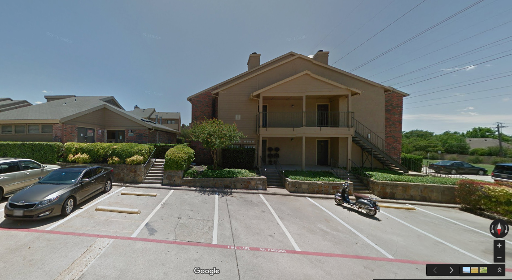
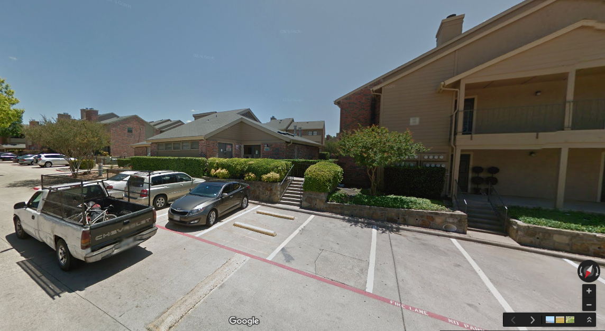
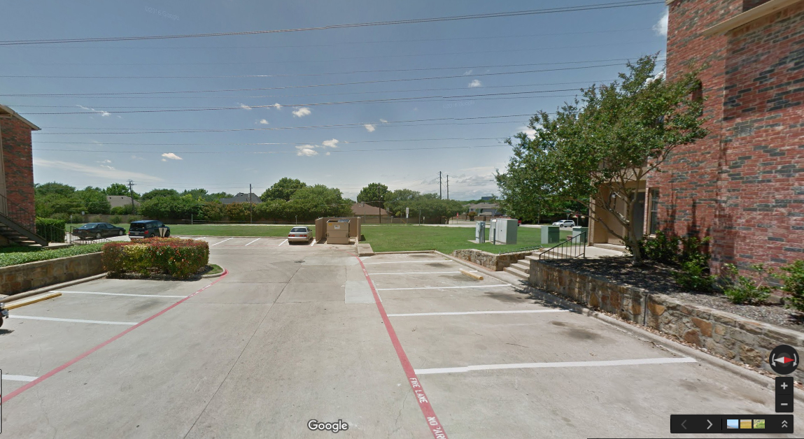
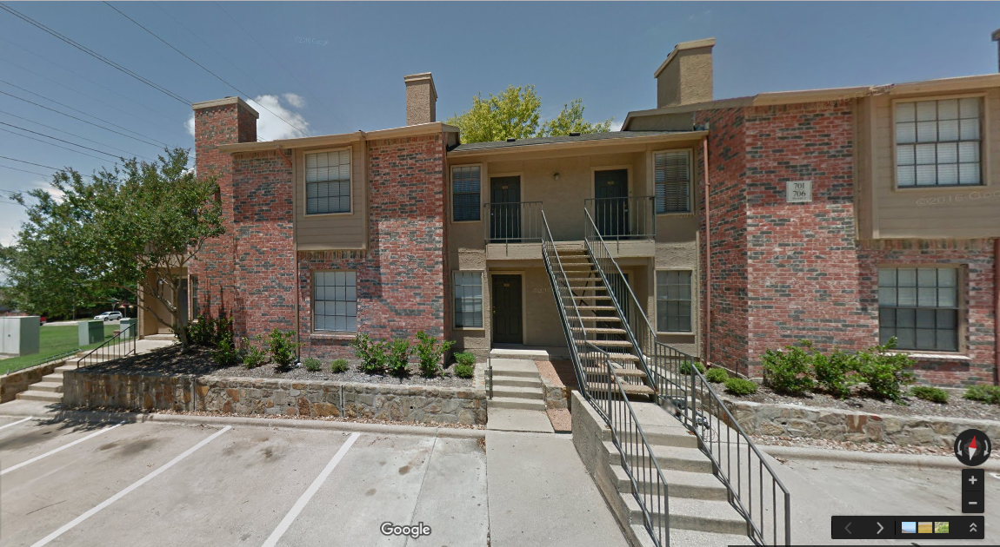
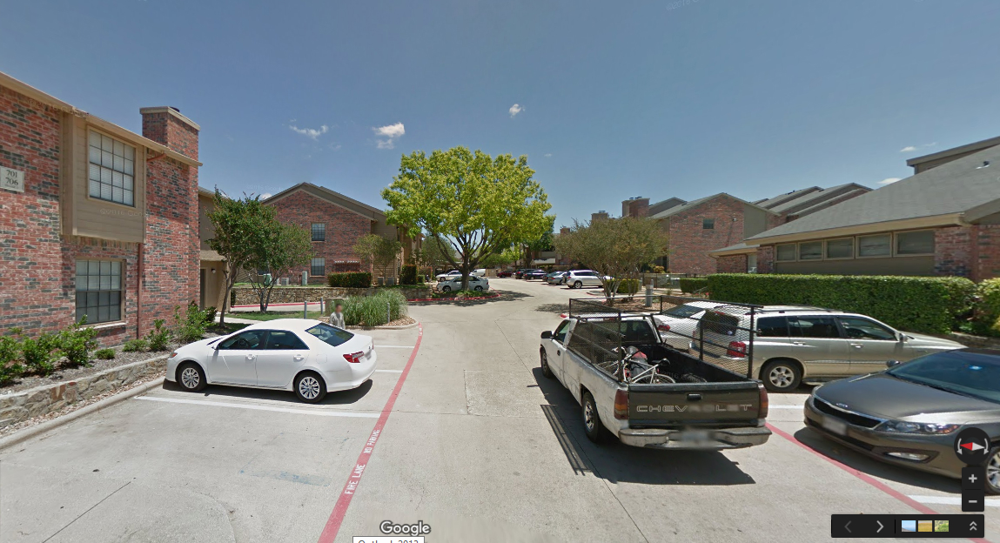

My Dear Premu,
I wanted to tell you something that I never told. An experience that I never shared. Last year, one dark , I slept early. But the next day when I woke up, I felt something missing. I tried a lot, turned my entire upside down but still I was unable to find out what was actually missing. It took me quite some to realise that it wasn't something materialistic, rather it was something inside me which was just not there.
At last, I lied down on my and on a close observation, I found that I couldn't hear my . I was shell shocked when I realised that it was my which had gone missing! I went to the but even he was not able to find me my heart. I called up my friends but all in vain.
Finally I decided to look for it on my own. I took my and left in search of my blood pumping organ!!. I had no and there were no on the . You wont believe, I covered almost entire but there were no signs of my heart!
At last, I gave up and sat under a . Cherry on the cake, it started to . I was very sad. The snowfall stopped and I see a fairy-like thing flying towards me from the far away skies. She holds my and asks me to come with her. I was out of all options, so I nod my head in unison and agree to go with her in the sky.
She drops me at this place .

I look around myself and this is what I see around me -




There comes a , running from behind and hugs me. She says, 'Are you looking for your ?. It's with me'. I turned back and the moment I looked at her -ing face, I felt like this is where I belong. She was like , like the most beautiful soul you'll ever see, like the brightest in my sky.
I captured her in my s . To this day, I haven't collected my heart back from her. To this day, she owns my heart. To this day, my lies somewhere near 32°98'N 96°77'W
I know you must be eager to meet that girl...! Are you? You wanna see who she is...?. I'll show you. Meet my treasure, here she is :
Hai na sabse cute? Meri Gugli, Meri Kukdi, Meri Gugadiya and mera pata nahi kya kya hai ye.... :*
Lub ju hippo, Wish u Happy Valentine's Day 🌹
Yours,
Ashu 🐷